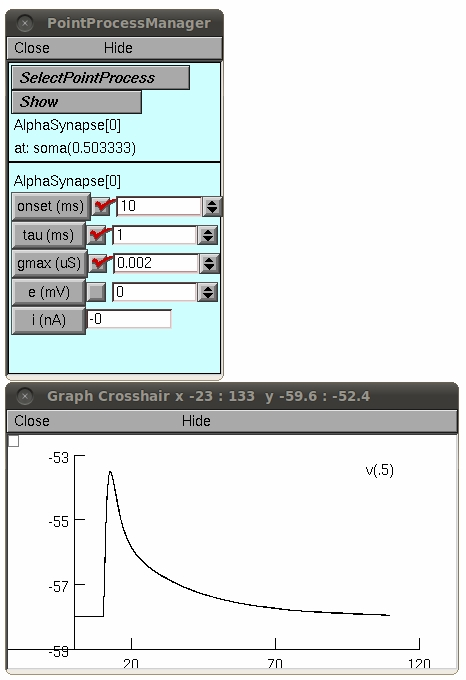

This is the readme for the model associated with the paper: Yoshiyuki Kubota, Fuyuki Karube, Masaki Nomura, Allan T. Gulledge, Atsushi Mochizuki, Andreas Schertel & Yasuo Kawaguchi (2011) Conserved properties of dendritic trees in four cortical interneuron subtypes. Scientific Reports 1(89):1-13 These files were contributed by Masaki Nomura. Example use: auto-launch from ModelDB (after NEURON is installed) or download the archive and run with appropriate OS command: (linux) type the command "nrngui run.hoc" at the shell prompt after cd'ing to the folder created when the archive was expanded. (mswin) double click the run.hoc file in windows explorer. (mac) drag and drop the folder created when the archive was expanded onto the nrngui icon. Once the simulation is started you can select a cell type, for example, click the Martinotti cell, BE17BNoActive, and then click the RunControl, and PointManager buttons. In the PointManager click SelectPointProcess -> AlphaSynapse PointProcess and set onset=10ms, tau=1ms, gmax=0.002. From the NEURON Main Menu select Graph -> Voltage axis. Press Init & Run button on the RunControl window and you should see a graph like a trace in Figure 6a left panel: 